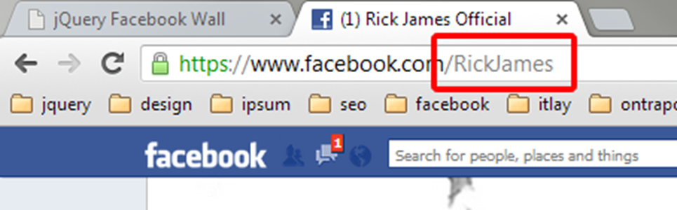
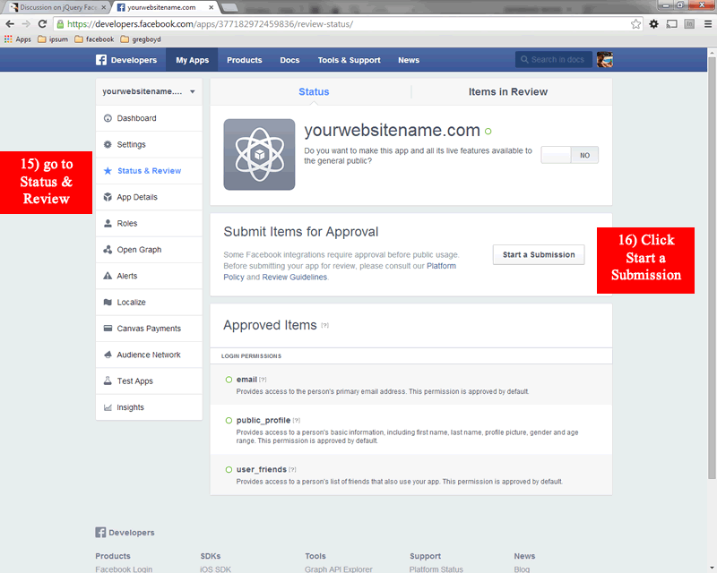
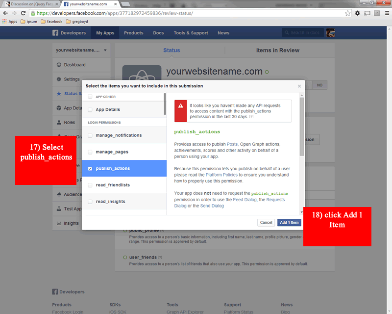
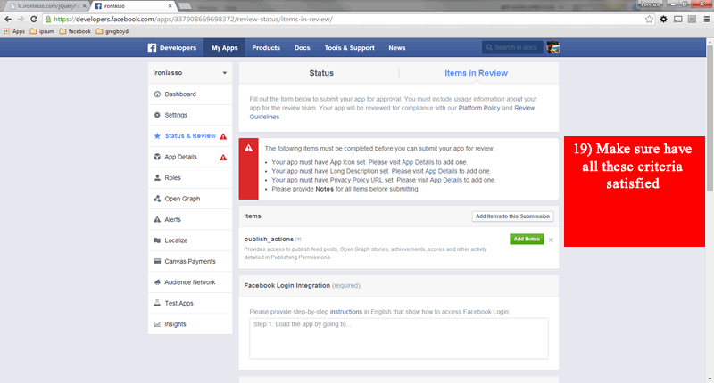
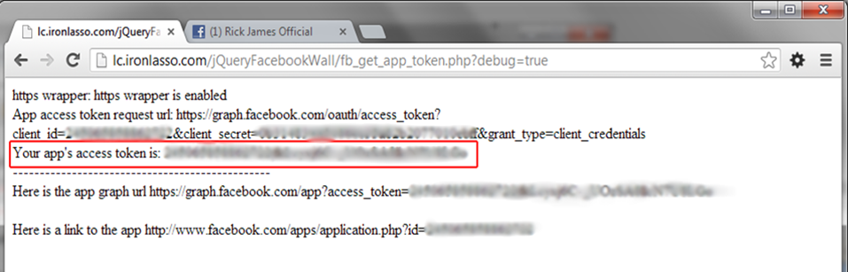

Created: 4/8/2014
By: Lorenzo Gangi
Email: lorenzo@ironlasso.com
Thank you for purchasing my jQuery plugin. If you have any questions that are beyond the scope of this help file, please feel free to email via my user page contact form here or at ironlasso.com. Thanks so much!
*jQueryFacebookWall uses a php script to retrieve a Facebook Access token. The access token only needs to be retrieved once, and a php script for its retrieval is included as a convenience. The Facebook Access Token can be retrieved by means other than php, so php is not strictly required for the plugin to function. See the Get Your Facebook Access Token section for more info.
jQueryFacebookWall (JQFW) wall is jQuery plugin that will retrieve your Facebook account data and build a Facebook styled feed on any website. JQFW provides a lot of features:
Follow these instructions to get your Facebook feed on your website. When you downloaded JQFW you got a file called jQueryFacebookWall-production.zip
/jQueryFacebookWall-production /css /images /js /licensing /templates readme.html fb_app_token.html fb_get_app_token.php index.html wall.html
<script src="//ajax.googleapis.com/ajax/libs/jquery/1.7/jquery.min.js"></script>
<script>window.jQuery || document.write('<script src="/jQueryfacebookWall/js/libs/jquery-1.7.min.js"><\/script>')</script>
B) Next, include the plugin javascript and CSS. You can include the minified versions:
<link rel="stylesheet" href="/jQueryFacebookWallcss/jQueryFacebookWall.css" type="text/css" media="screen" />
<script src="/jQueryFacebookWall/js/jQueryFacebookWall.js"></script>
or you can include the minified version for reduced page weight:
<link rel="stylesheet" href="/jQueryFacebookWallcss/jQueryFacebookWall.min.css" type="text/css" media="screen" />
<script src="/jQueryFacebookWall/js/jQueryFacebookWall.min.js"></script>
<div class="example-class-name" />
<script>
$(document).ready(function(){
// Calling the plugin with your fb account username and an access token
$('.example-class-name').jQueryFacebookWall({
'appId': 'yourAppId',
'facebookUser':'ufc',
'domain': 'ironlasso.com',
'display':'timeline',
'posts':{
limit: 22
},
'comments':{
showAtStart:3,
showMoreNum:10,
limit: 50
},
albums:{
limit: 6
},
'debug': false
});
})//end document ready
</script>
All HTML created by the plugin is contained in <div class='facebook-wall' /> The plugin creates a two-column layout. Events, albums, photos, and likes are always placed in the right column. Posts are placed in in the left column for the wall style feed (which you can set in your options) and are placed in both the left and right columns alternating. The plugin also provides a light box to browse photo albums. The containing <div> for this is appended to the end of the parent .facebook-wall
Most of the HTML is managed via .ejs template files. See http://embeddedjs.com/ if you are interested in how that works. All of the template files can be found in jQueryFacebookWall/templates/ if you should ever need to make any changes. In that directory you will find templates for:
All plugin CSS is located in the /jQueryFacebookWall/CSS/jQueryFacebookWall.css
The CSS document is divided five main parts:
Also in included is a minified version of all CSS jQueryFacebookWall.min.css. Use this file instead of the unminified version to reduce load time and page weight.
All plugin javascript is located in /jQueryFacebookWall/js/. The plugin uses three javascript files:
Also included is a minified version of all javascript jQueryFacebookWall.min.js. Use this file instead of the unminfied version to reduce load time and page weight.
I've used the following images, icons or other files as listed. You can find them in jQueryFAcebookWall/images/
jQueryFacebookWall has a single API method
Usage: Remove a jQueryFacebookWall example
//Destory example and recreate example--------------------------------------------------------------
//create a facebook wall
var options = {
'appId': 'yourAppId',
'facebookUser':'ufc',
'domain': 'ironlasso.com',
}
var facebookWall = $('.facebook-wall').jQueryFacebookWall(options);
//Then get the plugin object from the jQuery element object.
var jqfbw = facebookWall.data('plugin_jQueryFacebookWall');
//Then you can make api calls.
jqfbw.destroy();
//and make a new facebook wall
$('.facebook-wall').jQueryFacebookWall(options);
jQueryFacebookWall offers a multitude of options so that you can tweak it to get exactly what you want.
Option: |
Name of the plugin option. |
Type: |
Data type of the option. If the option is an enumerated, type the possible values are listed in array style syntax i.e., [‘value 1’, ‘value 2’]. |
Required: |
Defines if the option must be set; if ‘yes’ then the option value must be provided in the plugin instantiation call. If not yes, the default value of the option is listed. |
Description: |
Description of the options functional purpose. |
Option |
Type |
Required |
Description |
|
|
|
|
appId |
string |
yes |
Facebook app id. |
domain |
string |
yes |
Domain name where the plugin is used. i.e., www.ironlasso.com |
FacebookUser |
string |
yes |
Your book account name. |
display |
[‘timeline’,’wall’,’single-column’] |
timeline |
The display style of the wall. See examples. |
displayAnimation |
boolean |
true |
Apply CSS3 scale transitions to feed post when loading |
displayAnimationDelay |
int |
200 |
How fast the display animation will be seperated by in milliseconds |
| language | ['dansk', 'deutsch,','dutch', ‘english’, ’espanol’, 'francais’, italiano’, 'polski', 'svenska', 'turk' ] | english | Language Translation for the user interface. |
posts.feedType |
[‘feed’,’posts’] |
feed |
Feed type defines if you would like to show the Facebook user's feed (include posts from other users) or posts (only posts from Facebook user). |
posts.limit |
int |
10 |
The max number of posts to retrieve from Facebook. Note: Facebook may or may not return the max number of posts. Some posts get filtered for various reasons (privacy, blocked user, region, etc.). |
| posts.order | int | 5 | The order in which the posts feed will be added to the wall in relation to the events, albums, and likes. |
comments.limit |
int |
100 |
Max number of comments returned from Facebook; 5000 is the max value Facebook allows. |
comments.showAtStart |
int, ‘All’ |
2 |
The number of comments to show when the wall first loads; use 'All' to show all posts on load. |
comments.showMoreNum |
int |
50 |
The number of comments that will be revealed when the 'view more comments' link is clicked for a story. |
likes.show |
boolean |
true |
Show your Facebook account likes. |
likes.useCoverPhotos |
boolean |
false |
Show only likes that have a cover photo defined, and use the cover photo as the like image. |
likes.limit |
int |
5 |
The number of account likes to show. |
| likes.order | int | 4 | The order in which the likes section will be added to the wall in relation to the posts, albums, and likes. |
| likes.minLikes | int | 0 | The minimum number of like a post must have for it to be included in the wall feed. |
albums.show |
boolean |
true |
Show your Facebook account albums. |
albums.limit |
int |
3 |
Number of albums to show. |
| albums.order | int | 3 | The order in which the albums section will be added to the wall in relation to the posts, photos, and likes. |
| albums.filterAlbums | array | false | false | Only show specific albums. If this options is set to ['timeline', 'cover photos'] only the albums timeline and cover photos will be displayed. |
photos.show |
boolean |
true |
Show your Facebook account photos. |
photos.type |
[‘profile’,’uploaded’,’tagged’] |
uploaded |
The type of photos to show in your photos Section. ‘Uploaded’ shows timeline photos, ‘profile’ shows your profile pics, ‘tagged’ shows photos you have been tagged in. |
photos.numColumns |
[‘2’,‘3’,‘4’] |
4 |
The number of image columns you want in the photos Section, you may want to adjust the image height in jQueryFacebookWall.css => .Facebook-wall.timeline .photos .photo-cover-photo-wrapper |
photos.showAtStart |
int |
12 |
|
photos.limit |
int |
25 |
The total number of photos to retrieve from Facebook. |
| photos.order | int | 2 | The order in which the photos section will be added to the wall in relation to the posts, albums, events and likes. |
events.show |
boolean |
true |
Show your Facebook account events. |
events.showPastEvents |
string | boolean |
false |
/show past events that are still in your facebook account, false to not show, 0 to show all, or mm/dd/yy to show events starting from a specific date. |
events.limit |
int |
10 |
Max number of events to retrieve from Facebook. |
| events.order | int | 1 | The order in which the events section will be added to the wall in relation to the posts, albums, photos and likes. |
debug |
boolean |
false |
Print plugin debugging info in the js console. |
jQueryFacebookWall use the Facebook's graph API to retrieve your Facebook account data. Facebook wants to know who is asking for and retrieving their data; consequently, they have an authentication system to manage these needs. One way to retrieve data in this authentication system is via a Facebook App. The App in turn can request an access token, and once an access token has been acquired it can make requests for data from the graph API. Long story short, jQueryFacebookWall needs three things to get your Facebook account data:
Your Facebook username appears after the www.facebook.com/ in your browser URL. Usually it looks something like this: www.facebook.com/*yourUserName*. In other words, if you are Rick James, your Facebook URL looks something like: www.facebook.com/RickJames. Sometimes you have to look at your timeline to get your account name in the URL.

Once you have your account name *yourUserName* you add it to your plugin options when instantiating a jQueryFacebookWall like so:
In this example the Facebook Account Name is RickJames
$('.example-class-name').jQueryFacebookWall({
appId: 'yourAppId',
FacebookUser: 'RickJames',
domain: 'yourDomain.com',
});
$('.example-class-name').jQueryFacebookWall({
appId: '25651869782451',
FacebookUser: 'RickJames',
domain: 'yourDomain.com',
});
Around the beginning of 2015 Facebook removed publish_actions from the default permissions granted to newly created Apps. Because jQuery Facebook Wall uses an app to publish likes and comments to posts and pictures, you need to requests publish_actions permissions be granted on your app. Here is how you do it:



jQueryFacebookWall provides a php script that will retrieve an access token for your convenience. To use it:
19 $app_id = '----------------';
20 $app_secret = '----------------';

* To generate an App access token via the fb_get_app_token.php script, php must have https wrapper enabled. In your php.ini ;extension=php_openssl.dll must be uncommented. If you can’t do this you may have to contact your hosting provider or system administrator.
If your host doesn't support php, you don't have php's https wrappers enabled, or you just like doing things by hand, you can retrieve a Facebook access token by the following means:
jQueryFacebookWall plugin makes use of Facebook’s open graph API, which has various levels of authentication requirements. Facebook pages have looser restrictions than user accounts; therefore, the plugin can retrieve more info (posts and album data) for pages than normal accounts. jQueryFacebookWall will work with normal accounts, but you will not be able to retrieve album data and you will have to edit the permissions of your posts and photos in your Facebook account. If you don’t have a Facebook page, you should consider creating one. You can do so by logging into Facebook and going here: https://www.Facebook.com/pages/create/
Here are the caveats imposed by Facebook’s authentication requirements:
Yes can use the plugin with ASP and IIS! It takes few extra set up steps. You'll need to add .ejs mime types to IIS.
IIS does not like the file extension of the ejs javascript templateing engine used by the plugin (.ejs). You need to add a MIME extension for .ejs with type :text/html in your IIS administration panel. If you do that everything should work . Here is an blog I found on the subject
The problem: http://forums.asp.net/t/1442319.aspx/1
How to add a mime type in IIS: http://technet.microsoft.com/en-us/library/cc725608(v=ws.10).aspx
Once again, thank you so much for purchasing this plugin. As I said at the beginning, I'd be glad to help you if you have any questions relating to this plugin. You can ask me question at my site. No guarantees, but I'll do my best to assist. If you have a more general question relating to the plugins on CodeCanyon, you might consider visiting the forums and asking your question in the "Item Discussion" section.
Lorenzo Gangi